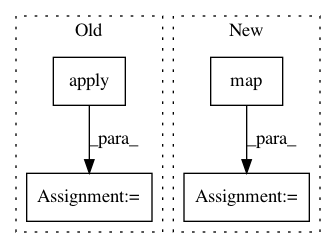

11773c9da5a585f0c8e8ce3a0ce3596bb3ef5fa2,osmnx/utils_graph.py,,graph_to_gdfs,#Any#Any#Any#Any#Any#,17
Before Change
nodes, data = zip(*G.nodes(data=True))
gdf_nodes = gpd.GeoDataFrame(list(data), index=nodes)
if node_geometry:
gdf_nodes["geometry"] = gdf_nodes.apply(lambda row: Point(row["x"], row["y"]), axis=1)
gdf_nodes.set_geometry("geometry", inplace=True)
gdf_nodes.crs = G.graph["crs"]
to_return.append(gdf_nodes)
After Change
if node_geometry:
// convert node x/y attributes to Points for geometry column
geom = map(lambda d: Point(d["x"], d["y"]), data)
gdf_nodes = gpd.GeoDataFrame(data, index=nodes, crs=crs, geometry=list(geom))
else:
gdf_nodes = gpd.GeoDataFrame(data, index=nodes, crs=crs)
In pattern: SUPERPATTERN
Frequency: 4
Non-data size: 4
Instances
Project Name: gboeing/osmnx
Commit Name: 11773c9da5a585f0c8e8ce3a0ce3596bb3ef5fa2
Time: 2020-06-07
Author: boeing@usc.edu
File Name: osmnx/utils_graph.py
Class Name:
Method Name: graph_to_gdfs
Project Name: okfn-brasil/serenata-de-amor
Commit Name: 333d69671c35b4566d6ec8a344a35507e49face9
Time: 2017-05-24
Author: jessicatemporal@gmail.com
File Name: develop/2017-05-19-jtemporal-cities-population-study.py
Class Name:
Method Name:
Project Name: pyannote/pyannote-audio
Commit Name: 3592ffe3e5fe916afda27c49e477299ebc08f908
Time: 2018-10-12
Author: bredin@limsi.fr
File Name: pyannote/audio/applications/change_detection.py
Class Name: SpeakerChangeDetection
Method Name: validate_epoch
Project Name: tensorflow/magenta
Commit Name: e4e7cfcd4296de94172412f7383b559ad3b8b747
Time: 2019-05-01
Author: adarob@google.com
File Name: magenta/models/music_vae/data.py
Class Name:
Method Name: get_dataset